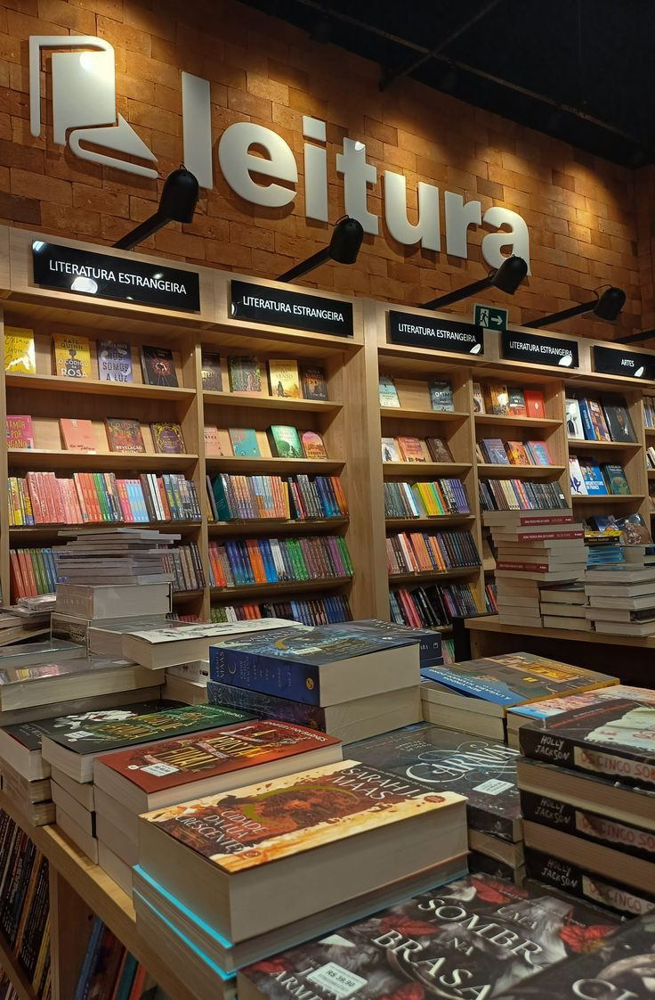
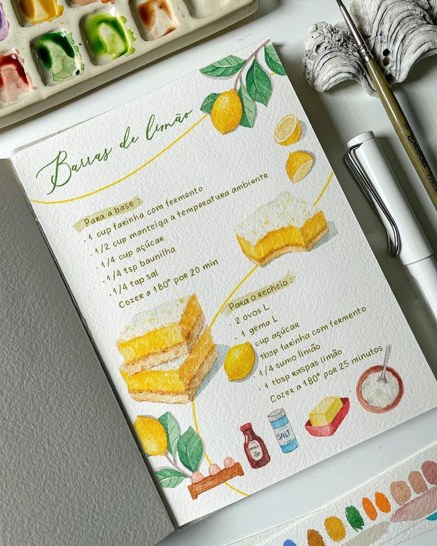

Meus projetos

Projeto: Sabores da Escola
Tem como objetivo estimular a criatividade, a valorização cultural e o aprendizado interdisciplinar dos alunos do Ensino Fundamental por meio da produção coletiva de um caderno de receitas.

Leitura em Família
Tem como objetivo promover a valorização da leitura dentro do ambiente doméstico, incentivando pais, responsáveis e crianças a compartilharem momentos de leitura em conjunto.

Projeto: Trilhas do Bem-Estar
Busca promover a saúde mental e emocional por meio da vivência em ambientes naturais. A proposta consiste em realizar caminhadas guiadas em trilhas ecológicas, incentivando os participantes a se reconectarem com a natureza, reduzirem os níveis de estresse e desenvolverem hábitos de cuidado com o corpo e a mente.